¿Quiénes son?
Cuarteto de Nos nace a mediados de los 80 y en los 90 se consolida como una de las bandas más significativas del rock uruguayo. Irreverentes, con humor negro, música de todos los estilos, desafiantes y con una actitiud punk llevada al humor y a la creación de personajes extraños de ficción. Editan en el 94 “Otra Navidad en las Trincheras” y se convierten en la banda más popular del rock uruguayo, trascendiendo a todo público y edades. A tal punto que al día de hoy sigue siendo el disco más vendido de la historia del rock nacional. Cuentan hasta la fecha con 16 trabajos discográficos, generando múltiples discos de Oro, Platino y Triple Platino.
Integrantes
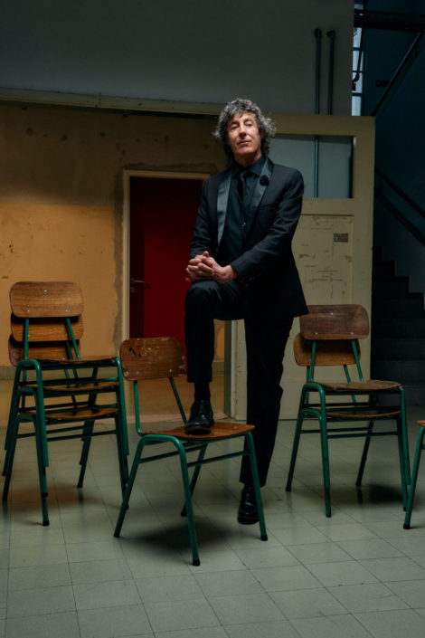
Roberto Musso - Guitarra y voz
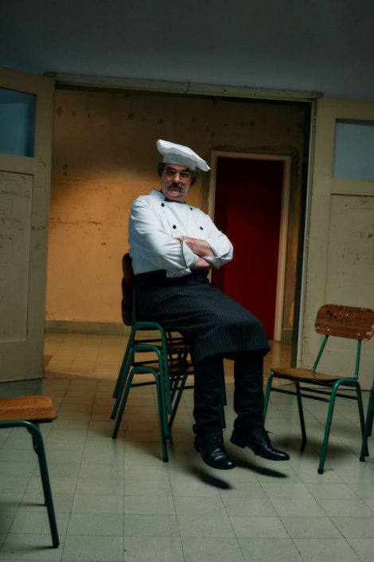
Santiago Travella - Bajo y voz
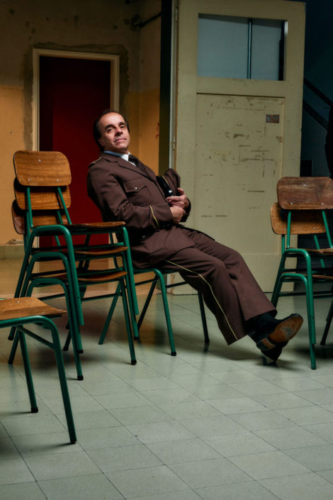
Álvaro Pintos - Batería y coros

Gustavo Antuña - Guitarra y coros
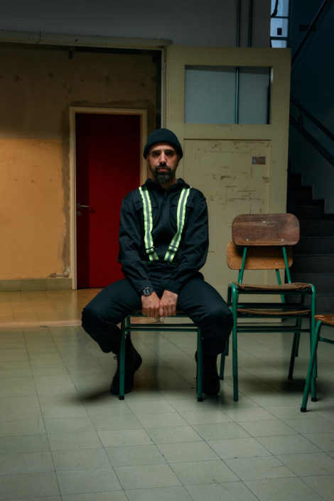
Santiago Marrero - Teclados, programaciones y coros
Galería
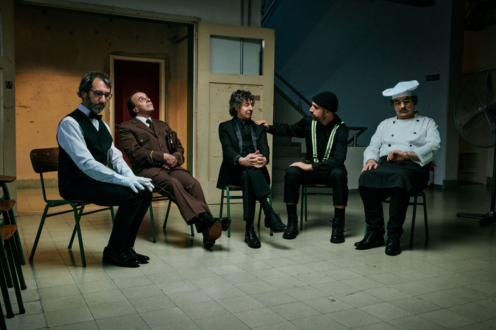
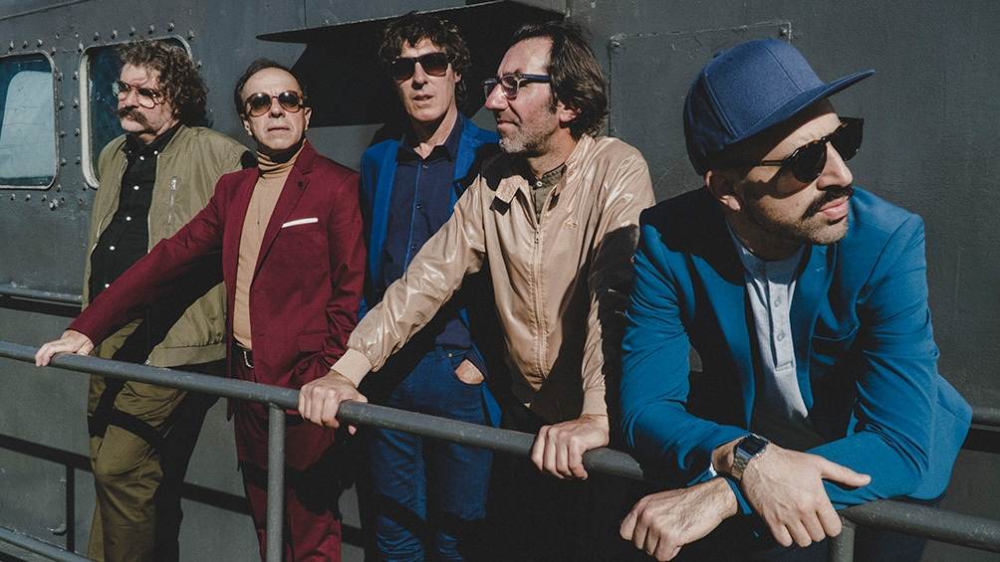
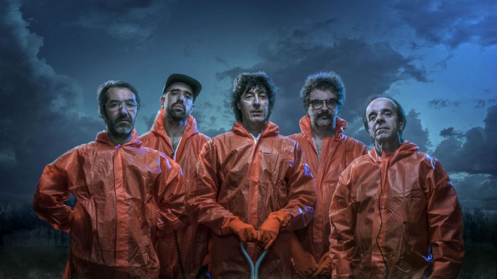
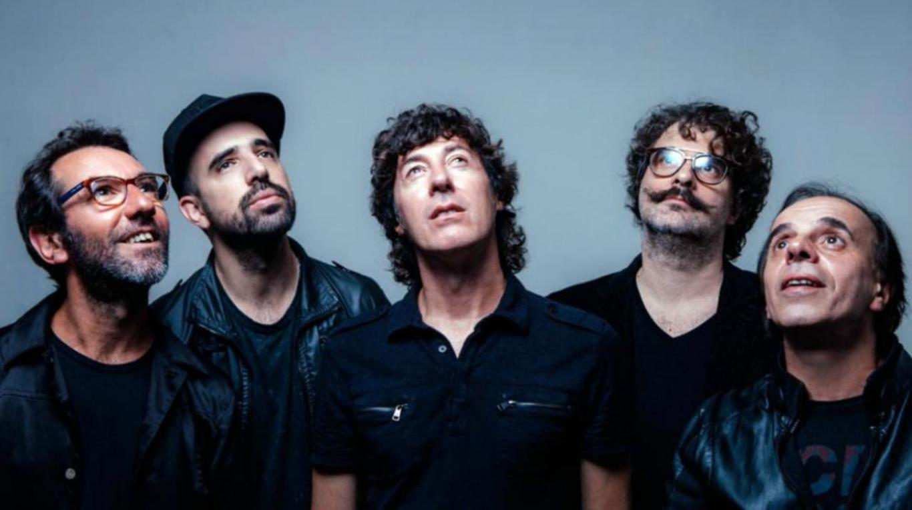
 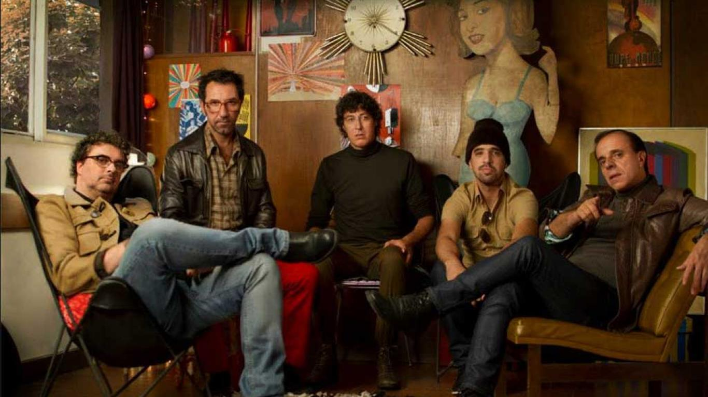
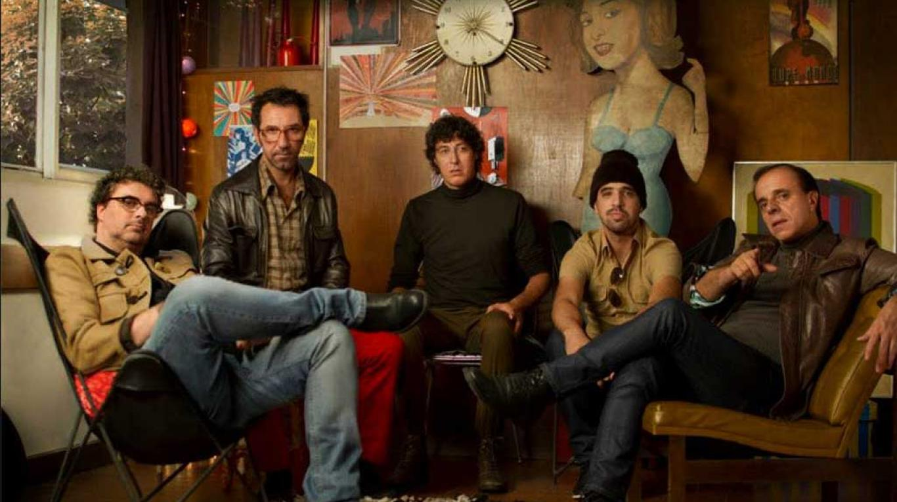

Discografía
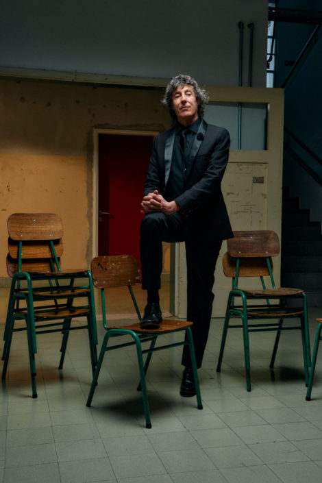
Roberto Musso - Guitarra y voz
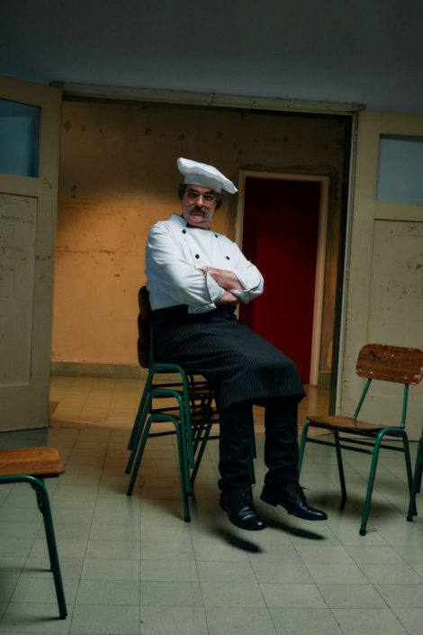
Santiago Travella - Bajo y voz
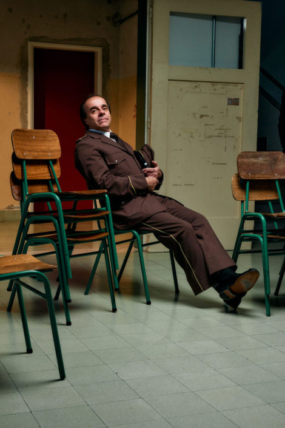
Álvaro Pintos - Batería y coros
Gustavo Antuña - Guitarra y coros
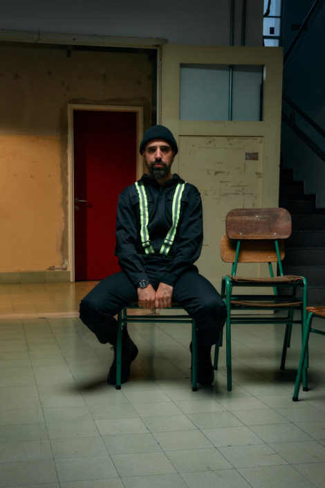
Santiago Marrero - Teclados, programaciones y coros
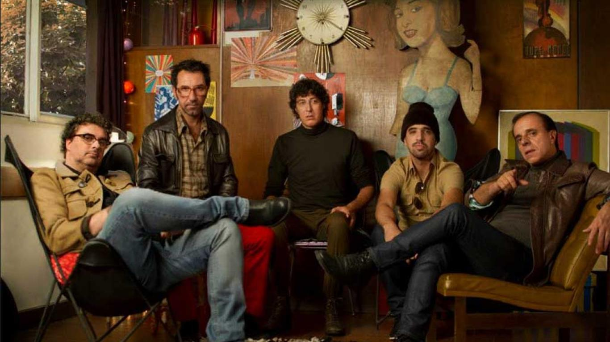